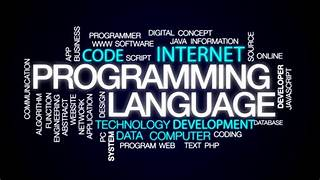
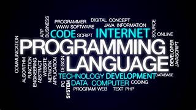

Hello! I’m Ghosh deb kumar, a dedicated programming enthusiast with a deep passion for technology and problem-solving. My journey in the tech world began in India, where I completed my schooling from 1st to 10th grade before pursuing a diploma in Computer Engineering. This foundation paved the way for an exciting opportunity with IBM, where I underwent an enriching training program that expanded my skills and knowledge.
Currently, I’m continuing my education at Ritsumeikan University in Japan, where I’m immersed in good study enviroment and development in the field of computer science. My love for programming drives me to constantly learn and innovate, tackling challenges with enthusiasm and creativity.
Outside of my professional life, I’m an avid cyclist. Cycling not only keeps me fit but also provides a refreshing break from coding and an opportunity to explore new horizons. I’m excited to share my experiences and projects with you through this website and look forward to connecting with others who share my interests in programming and cycling. Thank you for visiting!
.jpeg) 
